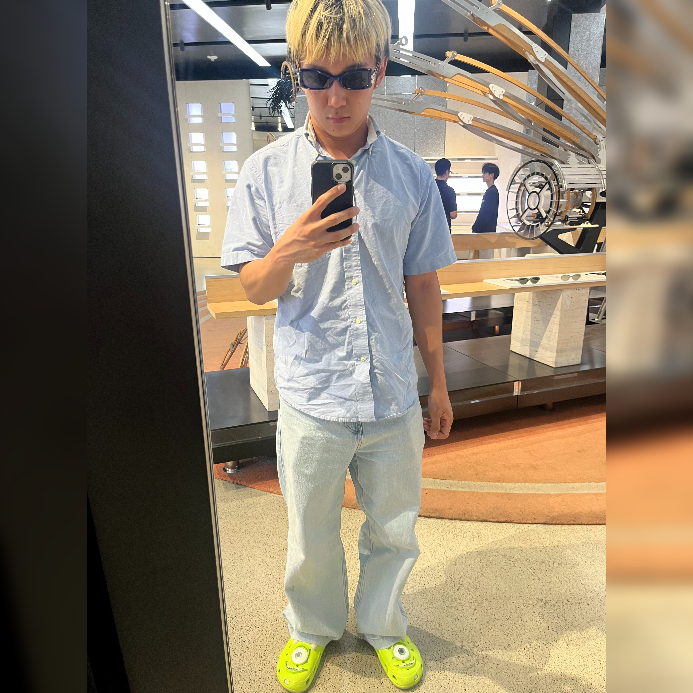

Hi, I'm Brian Jing, an incoming sophomore at UC San Diego studying data science! I'm passionate about developing AI products that solve real-world problems and improve business operations. In high school, most of my impact was in healthcare — from a convolutional neural network detecting tuberculosis to a random forest Alzheimer’s diagnosis model. But now, I'm expanding my impact beyond healthcare, looking to use those same AI tools to improve how businesses operate across many different industries.
Currently, I’m taking inspiration from my interest in fitness to build POWERCOACH, an app that gives real-time feedback on weightlifting form to help gym-goers avoid injury and lift smarter.
